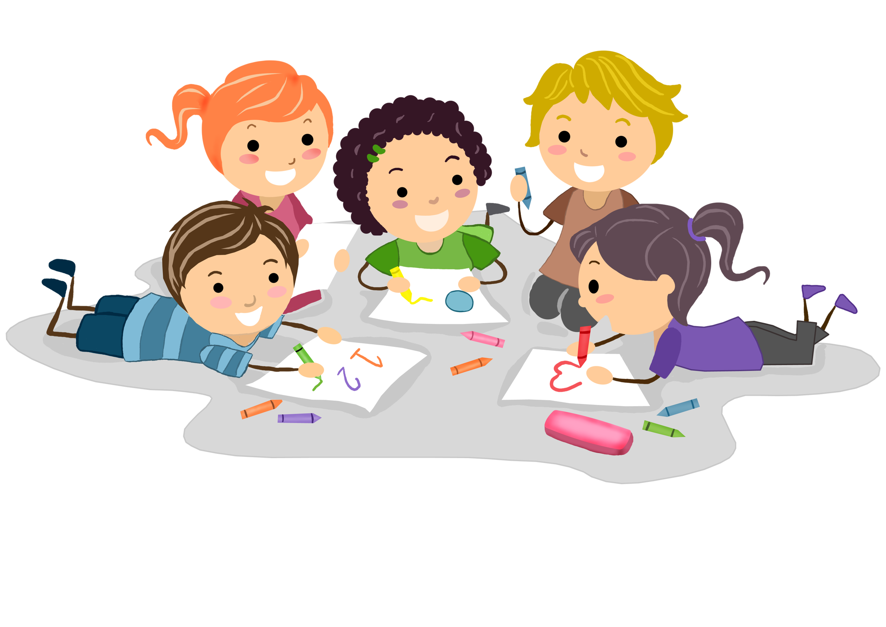

информация
Детский сад — учреждение для временного пребывания детей дошкольного возраста, а также комплекс таких учреждений. Детские сады как тип учреждений существуют в большинстве стран и являются обычно первым звеном в системе народного образования (не считая образования, полученного от родителей). Система детских садов предназначена для массового, общедоступного решения проблемы занятости их родителей (для чего время работы детского сада в большинстве случаев совпадает с типовым рабочим графиком большинства профессий: с 7 до 19 часов пять дней в неделю). В системе детских садов осуществляется также минимальная подготовка детей к обучению в школе — на уровне первичных навыков.
Статус детского сада: общеобразовательный. Язык обучения: чеченский, русский. Детский сад работает 5 дней в неделю с 8.00 до 19.00 Питание в детском саду пятиразовое. Введены дополнительные образовательные услуги: английский язык, казахский язык. Работают кружки: "Творческая мастерская", "Занимательный английский", "Шахматы" Дети распределены по 10 возрастным группам
наши аккаунты в социальных сетях
.png)
.png)
.png)